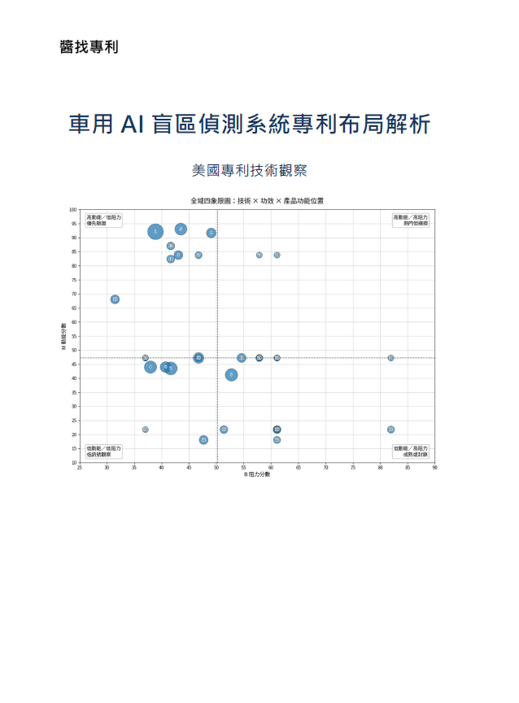

《打蛋器清潔工具》既能清麵糊，還能當「刮刀」？
US10595680B2
EDGE DESIGN GLOBAL ENTERPRISES INC.
點擊預覽
機器人技術正從傳統工業自動化演進為「具身智能」，結合人工智慧、高階感測與精密控制，賦予機器自主感知、學習及行動能力。核心技術涵蓋機器學習、電腦視覺、自主導航（AMR）及力矩控制，廣泛應用於製造、物流、醫療與仿生人形機器人領域。
Apple 是一家美國科技公司，主要設計與銷售 iPhone、Mac、iPad、Apple Watch 等硬體，也提供 iOS、App Store、iCloud、Apple Music 等服務，以設計、品牌、生態系與使用者體驗聞名。
矽光子（Silicon Photonics）是一種將「光訊號傳輸」技術直接整合進半導體矽晶片的尖端技術。它突破了傳統電子晶片以「電訊號」傳輸資料的物理極限，改以「光子」代替電子進行高速、大容量的數據傳遞。隨著 AI 算力需求迎來爆發，傳統銅線傳輸在面對巨量資料時已面臨頻寬、散熱與能耗的物理瓶頸，使得矽光子技術成為解決 AI 資料中心資料傳輸瓶頸的關鍵武器。
車網互動讓電動車成為可調度儲能，智慧電網能即時協調發電、用電與儲能，提升再生能源利用、降低尖峰負載、穩定供電，並減少碳排與能源成本。
Meta Platforms, Inc. 是全球大型社群與科技平台企業。本站從美國專利觀察其在 AI、VR/AR、元宇宙、數位廣告與智慧裝置等領域的研發方向與競爭布局。
追蹤公開／公告的臺灣專利，掌握企業技術布局、申請趨勢與競爭動態，並透過文章整理重點技術主題與年度觀察。
高智發明是代表性 NPE，主要透過專利收購、管理、授權與主張權利獲利。分析其專利資料，有助於觀察潛在訴訟風險、技術聚類與授權策略。
無機 LED 以氮化鎵、砷化鎵等無機半導體材料為核心，具高亮度、高效率與高穩定性，廣泛應用於照明、顯示器、車用光源與 Micro LED。
無人飛行器結合飛控、感測、通訊與自主導航技術，應用於物流、巡檢、測繪、農業與國防。從專利資料可觀察 UAV 技術演進與應用布局。
HUD 可將車速、導航與警示資訊投影在駕駛視線前方，提升行車安全與便利性，是智慧座艙、車載 AR 與先進駕駛輔助的重要人機介面。
收錄與車網互動與智慧電網技術相關的 689 筆美國專利。泡泡矩陣圖呈現技術 × 功效布局，並提供技術・功效群組查詢、醬AI小編分析與專利資料表。
此互動儀表板建議使用桌機或平板瀏覽。
收錄 Meta Platforms 公司的 1,121 筆美國專利。泡泡矩陣圖呈現技術 × 功效布局，協助快速掌握企業研發方向。
此互動儀表板建議使用桌機或平板瀏覽。
整理 2025/04/30 前已核准公告的高智發明美國專利，協助觀察 NPE 專利資產、訴訟風險與技術聚類。
此互動儀表板建議使用桌機或平板瀏覽。
涵蓋 2025/04/30 前公開、涉及 IPC/CPC 分類 H10H 的美國無機 LED 專利，總計 68,121 筆。
此互動儀表板建議使用桌機或平板瀏覽。
涵蓋 2025/04/30 前公開、涉及 IPC/CPC 分類 B64U 的美國無人飛行器專利。
此互動儀表板建議使用桌機或平板瀏覽。
涵蓋 2025/04/30 前公開、涉及 IPC 分類 G02B 27/01 的美國 HUD 專利，提供篩選條件與資料表查詢。
此互動儀表板建議使用桌機或平板瀏覽。
以數據點呈現前百大專利申請人的 HUD 專利申請趨勢，滑鼠移至數據點可查看專利書目資訊。
此互動儀表板建議使用桌機或平板瀏覽。

本書以 車用 AI 盲區偵測系統 為主題，從公開美國專利資料出發，分析相關技術的專利布局樣貌、關鍵技術戰場、設計主軸、主要申請人布局，以及可對照的產業應用訊號。 本書的核心觀點是：車用 AI 盲區偵測不應只被理解為「偵測盲區內是否有物體」的單一功能，而應被放在一條更完整的安全決策鏈中觀察。這條決策鏈包括資料來源整合、風險狀態判斷、駕駛與車輛狀態確認、警示時機與呈現方式，以及控制介入與避撞回應等面向。 全書依序整理車用 AI 盲區偵測專利的整體樣貌，說明如何從技術手段、功效目標與產品功能位置中選出值得優先關注的技術戰場，並進一步將該技術戰場拆解為六個設計主軸。書中也比較主要申請人在不同設計主軸與技術架構層級中的布局位置，協助讀者理解各申請人在安全決策鏈中的角色差異。 此外，本書也將專利設計主軸對照至 V2X、盲區警示、盲區介入、車道變換輔助、駕駛監控、人機介面警示與協同感知等產業應用訊號，提供讀者後續觀察產品資料、競品簡報、技術白皮書與新公開專利時可使用的判讀框架。 本書適合關注車用安全、ADAS、智慧車輛、汽車電子、專利布局與技術情報分析的讀者閱讀。